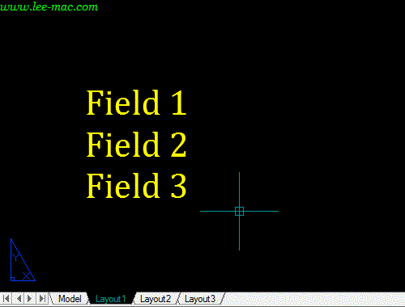

Layout Field
This page is delivered for consistency purposes only, as part of the LeeMac sample module of DynALisp, which shows how DynALisp turns existing AutoLISP programs into a module. The program and its description are the work of Lee Mac, who keeps all the credit for them. The original page, with the latest version, is on Lee Mac's website: https://lee-mac.com/layoutfield.html
| Function Syntax | LM-LayoutField – original syntax: lfname / lfnumber / lfsheet (see aliases) |
| Current Version | 1.0 |
| Compatible with AutoCAD for Mac? | No |
| Compatible with AutoCAD LT? | Yes |
| Original Page | lee-mac.com/layoutfield.html |
Program Description
This program defines a set of commands which enable the user to populate a selected annotation object (Text, MText, Attribute) with a field expression referencing the name and position of the layout in which the object resides.
Contrary to the typical use of the CTAB system variable, as offered by the standard AutoCAD FIELD command, the field expressions generated by this program directly reference the ActiveX Layout object within the Layouts Collection, and therefore do not depend on the layout being current in order to display the correct output.
This is particularly advantageous when using the DATAEXTRACTION command to retrieve data from multi-layout drawings, as field expressions which reference the CTAB system variable will yield the same value for every layout when processed by this command.
Available Commands
The program as published offers three commands to enable the user to generate field expressions referencing various properties of the layout in which the selected annotation object resides, and properties of the drawing as a whole; each command is described in more detail below:
LFName
This command populates a selected annotation object (Text, MText, Attribute) with a field expression referencing the name of the layout which contains the selected annotation object.
LFNumber
This command populates a selected annotation object (Text, MText, Attribute) with a field expression referencing the position of the layout which contains the selected annotation object, relative to the first Paperspace layout in the drawing.
LFSheet
This command populates a selected annotation object (Text, MText, Attribute) with a field expression referencing the position of the layout containing the selected annotation object, relative to the first Paperspace layout in the drawing, and also includes the total number of Paperspace layouts in the drawing.
Custom Commands
The program is structured in such a way as to allow the user to refine the content generated by the existing commands to suit their requirements, or define additional commands to reference other layout properties as required.
Demonstration

Bundled program notes
;;-------------------------=={ Layout Field }==-------------------------;;
;; ;;
;; This program defines a set of commands which enable the user to ;;
;; populate a selected annotation object (Text, MText, Attribute) ;;
;; with a field expression referencing the name and position of the ;;
;; layout in which the object resides. ;;
;; ;;
;; Contrary to the typical use of the CTAB system variable, as offered ;;
;; by the standard AutoCAD FIELD command, the field expressions ;;
;; generated by this program directly reference the ActiveX Layout ;;
;; object within the Layouts Collection, and therefore do not depend ;;
;; on the layout being current in order to display the correct output. ;;
;; ;;
;; This is particularly advantageous when using the DATAEXTRACTION ;;
;; command to retrieve data from multi-layout drawings, as field ;;
;; expressions which reference the CTAB system variable will yield ;;
;; the same value for every layout when processed by this command. ;;
;;----------------------------------------------------------------------;;
;; Author: Lee Mac, Copyright © 2016 - www.lee-mac.com ;;
;;----------------------------------------------------------------------;;
;; Version 1.0 - 2016-12-29 ;;
;; ;;
;; - First release. ;;
;;----------------------------------------------------------------------;;
;;----------------------------------------------------------------------;;
;; Layout Name ;;
;; ;;
;; Generates a field expression referencing the name of the layout ;;
;; in which the selected annotation object resides. ;;
;;----------------------------------------------------------------------;;
;;----------------------------------------------------------------------;;
;; Layout Number ;;
;; ;;
;; Generates a field expression referencing the position of the layout ;;
;; in which the selected annotation object resides. ;;
;;----------------------------------------------------------------------;;
;;----------------------------------------------------------------------;;
;; Sheet Number & Total Sheets ;;
;; ;;
;; Generates a field expression referencing the position of the layout ;;
;; in which the selected annotation object resides, and the total ;;
;; number of paperspace layouts in the drawing. ;;
;;----------------------------------------------------------------------;;
Command Names And Aliases
As in every DynALisp module, each program of this sample module has one main command, named LM-*, and the original command names of Lee Mac's page are kept as its aliases: they run the same command, and can be added, renamed or removed in Dyl-Suite (saved in Resources\Aliases.csv). The rows marked ↳ are child commands of LM-LayoutField: they are run by their alias, or picked from LM-LayoutField when it lists them (their command is named Pst-*).
| Command | Aliases | Name |
|---|---|---|
| LM-LayoutField | – | Layout Field |
| ↳ LFNAME | – | Layout Name Field |
| ↳ LFNUMBER | – | Layout Number Field |
| ↳ LFSHEET | – | Layout Sheet Field |